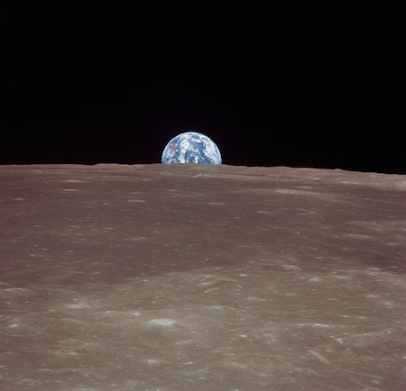
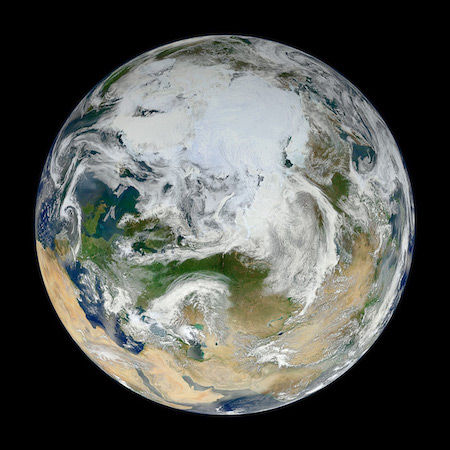
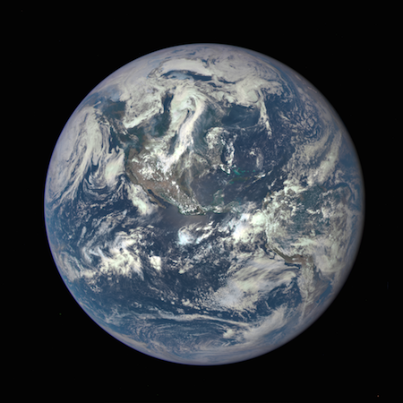

Tierra
Planeta tierra

Nuestro hogar, el planeta Tierra, es un planeta terrestre y rocoso. Tiene una superficie sólida y activa, con montañas, valles, cañones, llanuras y mucho más, la Tierra es especial porque es un planeta océano, ya que el agua cubre el 70% de su superficie.
Nuestra atmósferaestá compuesta, en gran parte, por nitrógeno. También tiene mucho oxígeno, que nos permite respirar. Además, nos protege de los meteoroides que se acercan a la Tierra, la mayoría de los cuales se desintegran en nuestra atmósfera antes de llegar a la superficie en forma de meteoritos.
Es posible que, como se trata de nuestro hogar, pienses que lo sabemos todo sobre la Tierra. ¡La verdad es que no! Aún nos queda mucho por aprender sobre nuestro planeta. Actualmente, hay muchos satélites en órbita alrededor de la Tierra, tomando fotos y realizando mediciones. Esto nos permite saber más cosas sobre el clima, los océanos, la tierra, el cambio climático y muchos otros temas importantes.
Estructura y superficie
- La Tierra es un planeta terrestre. Es pequeño y rocoso.
- La atmósfera terrestre tiene el grosor perfecto para mantener la temperatura templada del planeta, para que seres vivos como nosotros podamos vivir en él. Es el único planeta de nuestro sistema solar que sabemos que tiene las condiciones necesarias para que haya vida. Está compuesto por nitrógeno, en su mayor parte, pero tiene una buena cantidad de oxígeno, que es lo que nos permite respirar.
Tiempo en la Tierra
- Un día en la tierra dura algp menos de 24 horas días terrestres.
- Un año en la Tierra dura 365,25 días. Ese 0,25 extra hace que cada 4 años tengamos que añadir un día más al calendario. Ese año se llama año bisiesto.
Los vecinos de la Tierra
- La Tierra es el único planeta que tiene solo una luna.
- La Tierra tiene muchos satélites que la observan y la estudian. Aún nos falta mucho por aprender sobre nuestro planeta.
- La Tierra es el tercer planeta desde el Sol en nuestro sistema solar. Así, nuestros vecinos más cercanos son Venus y Marte.
Breve historia
- Conocemos la existencia de nuestro planeta desde la antigüedad, pero durante mucho tiempo no sabíamos que se encontraba en el sistema solar.
¿Qué aspecto tiene la Tierra?
Esta foto fue tomada por un astronauta desde el Apolo 11 en 1969, y muestra la Tierra asomándose por detrás de la Luna ¿No parece pequeña?.
Esta es una vista de la Tierra mirando exactamente hacia la parte norte.
Una cámara de la NASA tomó esta fotografía con el satélite Deep Space Climate Observatory. En ella se ve todo el lado de la Tierra iluminado por el Sol desde un millón de millas (1 600 000 kilómetros) de distancia.